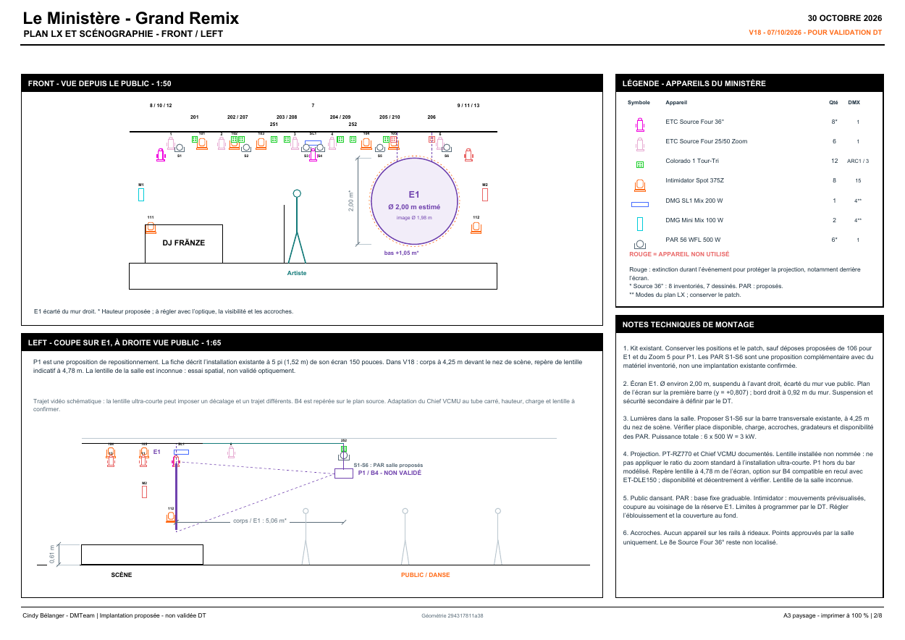
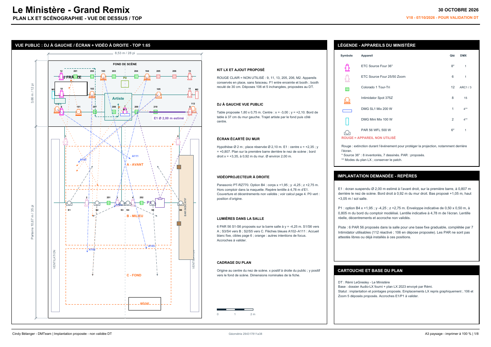

DJ à gauche, slam au centre
Table DJ proche du mur gauche. Zone de parole au centre et trajet proposé depuis la coulisse, à confirmer avec la salle.
Scénographie · Éclairage · Projection
L’implantation du Grand Remix au Ministère, réunie dans un dossier pour la direction technique : scène, DJ, écran circulaire, lumière et espace de danse.

Table DJ proche du mur gauche. Zone de parole au centre et trajet proposé depuis la coulisse, à confirmer avec la salle.
Diamètre estimé à 2 m, réserve de 2,10 m. Suspension proposée sur B1, environ 81 cm derrière le nez de scène. Position du projecteur à reprendre.
Orientations proposées vers l’artiste, le DJ et la piste. Six appareils non utilisés repérés en rouge et éteints ; sept lyres utilisables pour la scène et la piste. Sept ambiances de 30 secondes maximum : bleu intense et gobos cyan, DJ bleu, fond rouge maintenu pendant les accents strobe SL1 (crête 80 %), jaune/rouge chaleureux. Brouillard activable, nappe basse diffuse et volutes montantes ; aucun UV réel. Accueil blanc à 100 % réparti dans la salle ; scène éteinte sauf platines DJ, projection d’accueil active.
Conception : Cindy Bélanger — DMTeam · Mise à jour : 7 octobre 2026 · Géométrie commune : 294317811a38
01 / Comprendre l’espace
Cliquer sur un spot pour régler couleur, intensité, mouvement et gobos. Sept visuels animés de 30 secondes suivent les ambiances sur l’écran rond. Enregistrer et relire vos scènes.
Sur téléphone, « Ouvrir en grand » offre plus de place pour tourner autour de la scène.
Implantation et faisceaux illustratifs. P1/B4 reste un repère provisoire ; la projection et l’accroche ne sont pas validées. Les plans et la maquette utilisent les mêmes coordonnées. Visuels : accueil typographique, logo animé seul pour Ouverture/DJ, mer bleue (MER / MARÉE / ÉCUME), ville abîmée rouge (GUERRE / VIOLENCE / RÉSISTER), côte dorée (VACANCES / JOIE / SOLEIL) et « PAROLES BRUTES » pour la finale (titre inventé). Typographies et transitions variées par mot et par ambiance : brume, glissements, masques et impacts ; fonds animés et changements de cadrage en fondu. L’image projetée reste indépendante des ombres et de l’éclairage dans l’aperçu ; projecteur éteint, la toile diffuse reçoit la lumière de salle. Brouillard visuellement densifié d’environ un tiers, sans modifier les consignes de débit ni émettre de lumière. Rendu illustratif, sans validation photométrique.
02 / Lire l’implantation
8 planches · V18 · A3 paysage · Impression à 100 %

Si le PDF ne s’affiche pas, choisir Aperçu rapide ou ouvrir cette planche dans le PDF ↗. Le fichier téléchargé contient les huit planches.
03 / Préparer la rencontre technique
La lecture commune avant de fixer le montage et la programmation.
Base : fiche Audio-LX du Ministère, plans LX de la salle et documentation Panasonic PT‑RZ770. Les éléments architecturaux détaillés sont une reconstitution, pas un relevé coté complet. Les coordonnées sont communes au plan et à la maquette ; les faisceaux ne constituent pas un calcul photométrique.